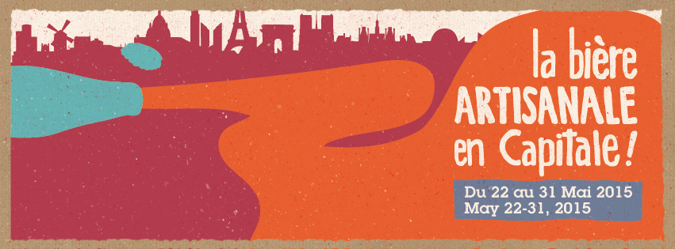

| Icon |
|---|
| Name |
| Chevron |

Du 22 au 31 mai, venez découvrir la scène brassicole française et internationale à travers une centaine d’événements organisés par les brasseries, les caves à bières, les bars, les distributeurs et les associations qui donnent vie à cette exaltante communauté.
Lancée en 2014, La Paris Beer Week est le premier festival d’Ile de France entièrement dédié à la bière artisanale. « Sans caractère, fade, boisson masculine… », les idées reçues ont la vie dure !
Initiée et organisée par des professionnels et des bénévoles, la Paris Beer Week veut combattre ces visions désuètes. Comment ? En mettant en avant la créativité de nombreuses brasseries enracinées dans un artisanat de qualité, et le dynamisme de ceux qui les font connaître au grand public.
La bière artisanale se développe rapidement à Paris et en province, grâce à un travail acharné, à un enthousiasme inébranlable, et au soutien d’amateurs comme vous. Alors venez trinquer avec nous lors de cette seconde édition de la Paris Beer Week !
Créée en 2009, la société Isogeo a pour objectif d’aider les organismes publics et privés à optimiser l’utilisation, le partage et la valorisation de leurs données géographiques. La Plateforme Isogeo – architecture informatique en nuage (cloud) et modules gérés en mode SaaS – permet de recenser, documenter et partager facilement les données.
Depuis 2012, Isogeo s’impose auprès des organismes publics et privés comme la solution de référence pour la gouvernance des données géographiques, permettant de répondre efficacement aux contraintes législatives, techniques et aux dynamiques sociétales comme l'ouverture des données (Open Data)
A simple, responsive template for building web mapping applications with Bootstrap 3, Leaflet, and typeahead.js. Open source, MIT licensed, and available on GitHub.
The data provided on this site is for informational and planning purposes only.
Absolutely no accuracy or completeness guarantee is implied or intended. All information on this map is subject to such variations and corrections as might result from a complete title search and/or accurate field survey.
Borough data courtesy of New York City Department of City Planning
MTA Subway data courtesy of the CUNY Mapping Service at the Center for Urban Research
Theater data courtesy of NYC Department of Information & Telecommunications (DoITT)
Museum data courtesy of NYC Department of Information & Telecommunications (DoITT)